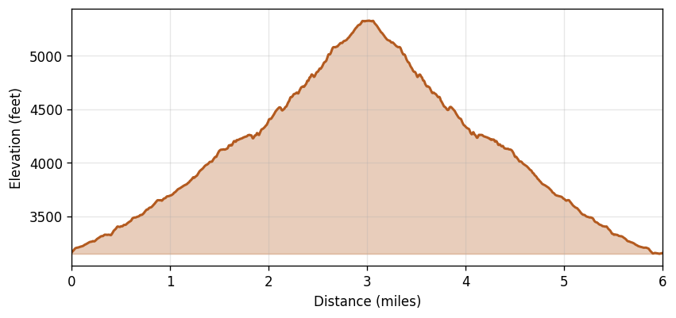

Mt Pilchuck
Region: Mt. Pilchuck State Park, Mt. Baker-Snoqualmie NF, WA
Date: 2022-08-08 (13:33–19:08 PDT)
Distance: 6.00 miles
Gain: 3,791 feet
Duration: 5h 35m (2h 57m moving, 2h 38m stopped)
Avg speed: 2.03 mph moving / 1.07 mph overall
Weather: Clear at start, overcast by the descent. Temps 72–80°F, WNW winds 3–6 mph, no precipitation.
Route
Elevation Profile
